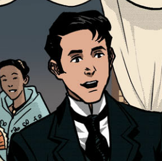

Kabanata 5: Pangarap sa Gabing Madilim
Sakay ng kalesa si Crisostomo Ibarra, nagpahatid siya sa pinakatanyag na bahay panuluyan sa Maynila, ang Fonda de Lala. Nagdaramdam at naghihinagpis na nagtungo si Crisostomo sa nirentahang silid, at iniisip ang kalunos-lunos na sinapit ng kanyang amang si Don Rafael Ibarra.
Mula sa bintana ng silid ng binata ay kaniyang natanaw ang isang maliwanag na tahanan sa kabilang bahagi ng ilog, ang bahay ay pinagmamay-ari ni Kapitan Tiyago. Ang kasiyahan ay para sa pagdating ng nag-iisang anak ni Kapitan Tiyago na nagmula sa kumbento na si Maria Clara.
Sa kaniyang kinaroroonan ay rinig niya ang mga kubyertos at ang tugtugin ng orchestra. Nagmasid-masid ang binata ta pinanood ang mga nagtatanghal. Matatanaw ang mga taong nagku-kwentuhan at nagtatanghal.Makikita sa patimpalak ang mga Pilipino,Kastila at mga prayle.
Natanaw niya ang mga dalaga na mayroong magagarang kasuotan at at mga diyamnte at ginto.May mga anghel na nag-aalay ng bulaklak at mga pastol na nakikiisa sa programa .Sa dinami-dami ng mga kababaihan sa patimpalak ay may isang binibini na pumukaw sa kanyang atensyon, si Binibining Maria Clara ang kanyang kasintahan.
Nabighani siya sa angking ganda nito at hindi maalis ang mata sa dalaga. Ngunit ng makita ni Crisostomo ang mga batang Pransiskano na payat at putlain ay nabahag na naman ito. Abala naman noon si Padre Sibyla na makipag-usap sa mga dalaga habang si Donya Victorina naman ay abala sa pag-aayos ng buhok ng napakarikit ba si Maria Clara.
Dahil sa pagod sa mga pangyayari at sa kalungkutan na nadarama ni Crisostomo Ibarra ay agaran siyang nakatulog. Binabagabag pa rin siya ng mga inilahad ni Tenyente Guevarra at ang mga larawan ng pagdurusa ng kaniyang ama sa bilangguan na naging dahilan ng pagkamatay nito.
Crisostomo Ibarra
Repleksyon
Sa kabila ng mga dagok at mga pagsubok na ating makakaharap sa ating buhay ay laging may isang tala na magiging simbolo ng bagong pag-asa. Kahit na anong pagsubok na ating kahaharapin ay malalagpasan natin ito. Mayroong mga bagay o tao na ating makakapitan na harapin ang mga problema na ating haharapin. Hindi tayo dapat na sumuko at bumitaw,dahil malalaya natin itong lagpasan. Kailangan na maging matatag tayo sa kung ano mang pagsubok na ating makakasagupa. Sapagkat ito ang maglililok sa atin upang tayo ay mas maging matatag para sa mga susunod na pagsubok. Kapag dumating ang panahon na hind mo na kaya ayos lamang na magpahinga ngunit huwag kang susuko kaya natin ito.